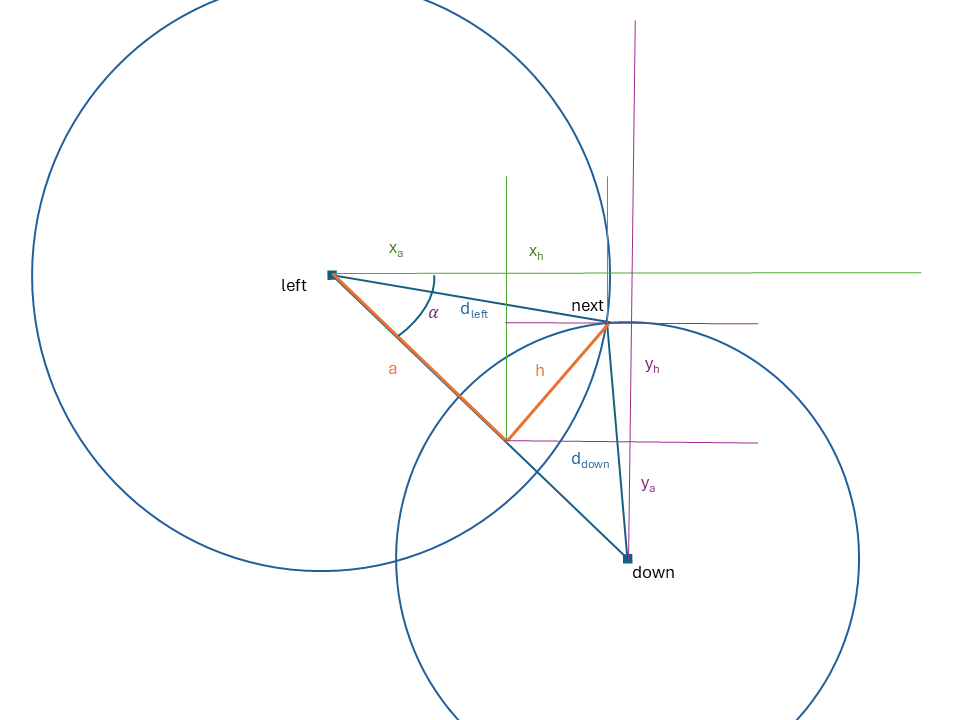
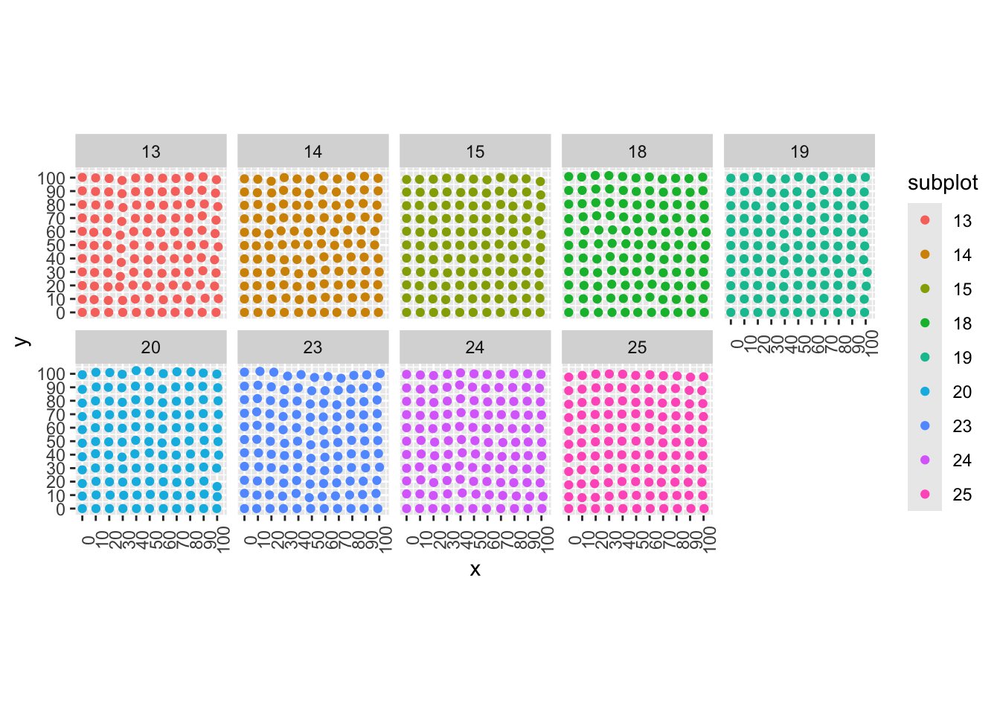
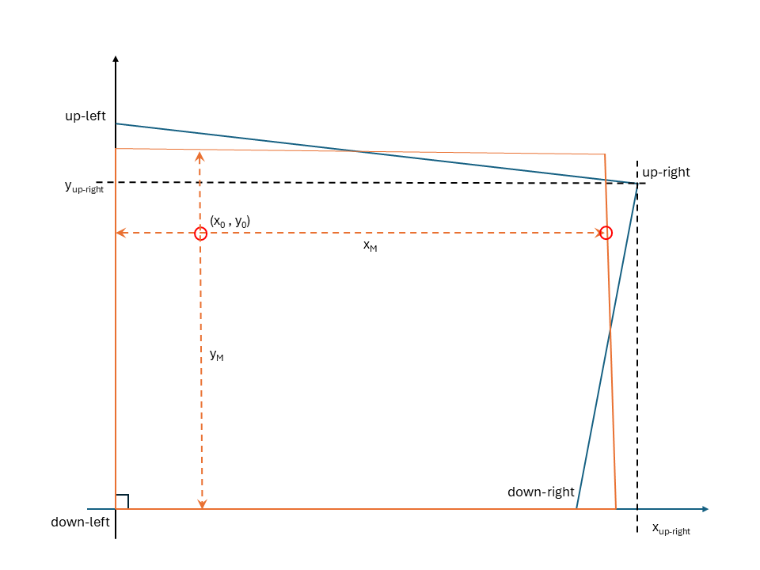
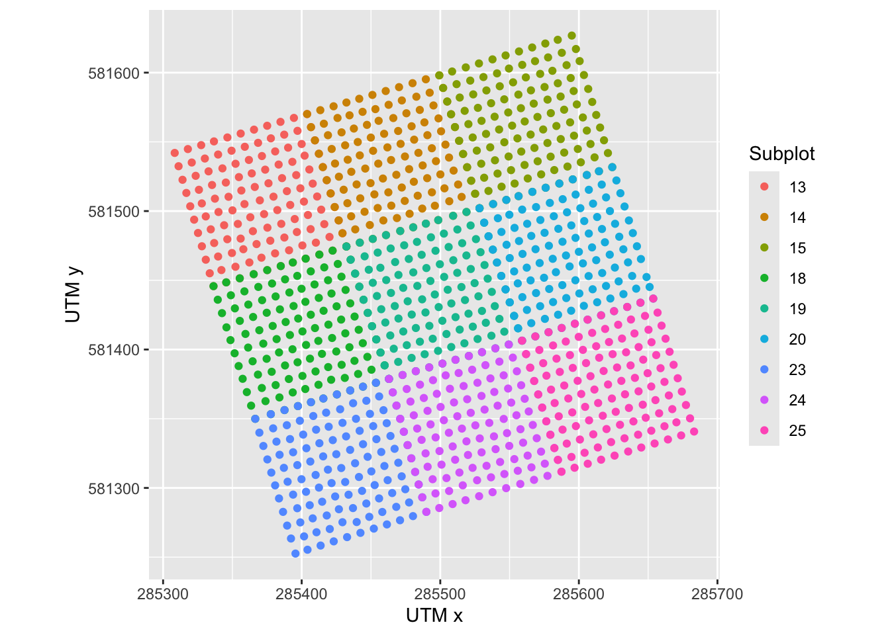
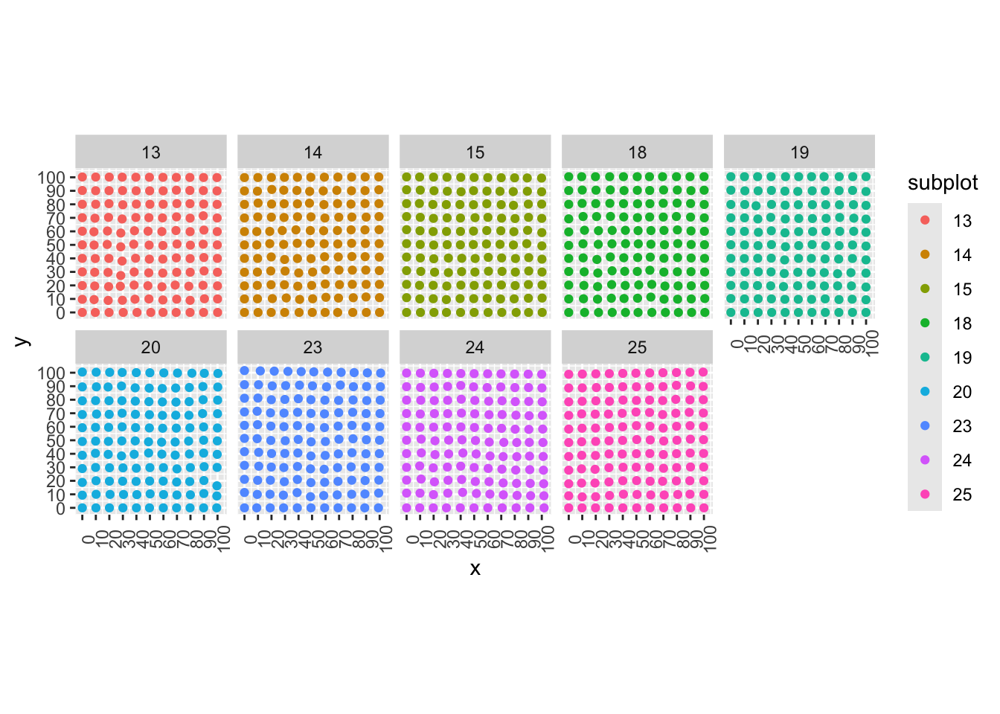
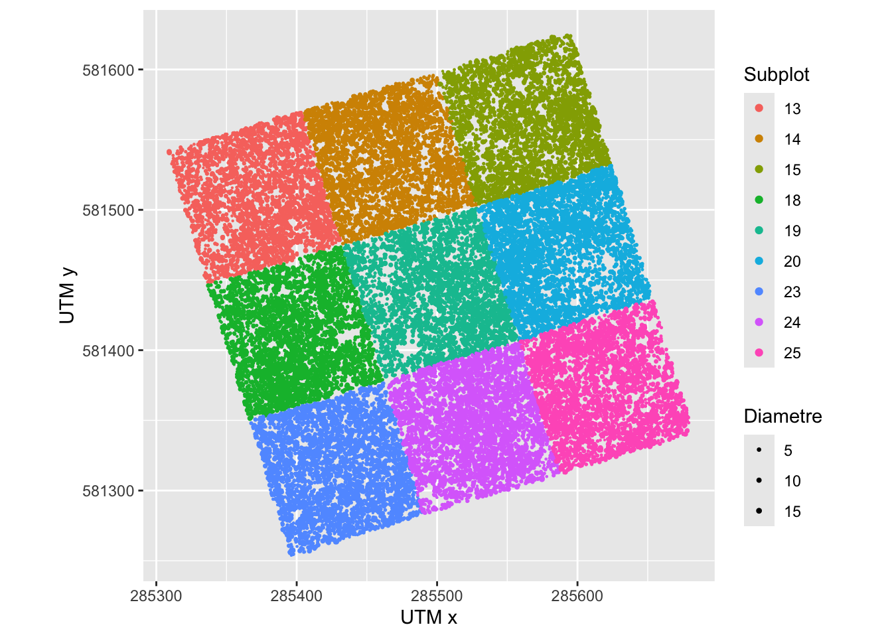

Repositioning the trees of the ALT project in Paracou (<1 cm DBH).
Problem to be addressed
The young trees on the 9-hectare Plot 16 in Paracou are located on the field within 10m by 10m quadrats, which are themselves grouped into 1-hectare subplots whose corner points (labelled B.1 to B.13) are known with great precision thanks to a surveyor’s survey.
Subplots are defined by their four corners (top-left, top-right, bottom-right and bottom-left, which is the origin of the local coordinate system) and are numbered.
The 10-metre squares are marked by stakes. Their positions are approximate (it is difficult to navigate and take angle and distance measurements in the understorey), but the distances between each stake and its neighbours have been precisely re-measured using a laser.
Finally, the trees were positioned within the plots based on their distance from the edges, subject to a degree of uncertainty.
The aim is to reposition the trees as accurately as possible within the subplots in order to obtain their coordinates in the local standard reference system, UTM Zone 26N.
Method
First, the quadrats will be repositioned within the subplots; the trees will then be repositioned within each quadrat. To do this:
The coordinates of the subplots must be converted to local coordinates, with the origin at the bottom-left corner of each subplot.
The quadrats must be repositioned within each subplot, based on the following assumptions:
the lower and left-hand boundaries of the subplots surveyed in the field for the placement of the quadrats are straight lines,
they are not necessarily orthogonal: the precise angle of the reference system’s base is given by the surveyor’s measurements,
the distances measured by laser are accurate, which makes it possible to calculate the position of the points forming the quadrats step by step by triangulation, starting from the origin of the subplot’s reference system.
The points obtained are repositioned within the precise boundaries of each subplot by interpolation,
Any discrepancies between the positions of the points on the right and upper edges of each subplot and those on the left and lower edges of the neighbouring subplot must be corrected because there is only one boundary stake. The left and lower edges are considered reliable.
Finally, the trees, whose coordinates have been measured in each quadrat, are projected into the quadrat corrected by the transition matrix, which projects the lower and left boundaries of the quadrat from the local reference frame.
Subplot local coordinates
Subplots must be projected into their local coordinate system: the bottom-left point is the origin of the coordinate system.
The conversion from local coordinates to UTM coordinates involves a change of basis (based on the coordinates of the UTM unit vectors) followed by a translation (based on the position of the subplot’s origin).
Coordinate system transformation
The transformation matrix (from local coordinates to UTM coordinates) consists of the coordinates of the unit vectors of the new coordinate system in the old coordinate system.
The fonction local2utm() returns this matrix for the selected subplot.
i j
[1,] 0.9581356 -0.2792892
[2,] 0.2863147 0.9602070
The conversion from UTM coordinates to local coordinates uses the inverse matrix:
# local coordinates of subplot 13, expected to be (100, 0)local2utm(13, surveyor, subplots) %>%# UTM to localsolve() %*%# UTM vector Xc( surveyor[surveyor$point =="B.7", "x_utm"] - surveyor[surveyor$point =="B.6", "x_utm"], surveyor[surveyor$point =="B.7", "y_utm"] - surveyor[surveyor$point =="B.6", "y_utm"] )
[,1]
i 1.000892e+02
j 3.136823e-15
Local coordinates
The local coordinates of the corners of the subplots are calculated as follows:
# Next column number, i.e. UMT coordinatescol_utm_first <-ncol(subplots) +1col_utm_last <- col_utm_first +7# Get the UTM coordinates of the pointssubplots %>%# add coordinates of point up_leftleft_join(surveyor, by =join_by("up_left"=="point")) %>%# delete the altitudeselect(-z_utm) %>%# rename the columns accoding to the chosen pointrename(up_left_x_utm = x_utm, up_left_y_utm = y_utm) %>%# repeat all three steps for up_rightleft_join(surveyor, by =join_by("up_right"=="point")) %>%select(-z_utm) %>%rename(up_right_x_utm = x_utm, up_right_y_utm = y_utm) %>%# repeat all three steps for down_rightleft_join(surveyor, by =join_by("down_right"=="point")) %>%select(-z_utm) %>%rename(down_right_x_utm = x_utm, down_right_y_utm = y_utm) %>%# repeat all three steps for down_leftleft_join(surveyor, by =join_by("down_left"=="point")) %>%select(-z_utm) %>%rename(down_left_x_utm = x_utm, down_left_y_utm = y_utm) -> subplots# Prepare the columnssubplots %>%mutate(# Local coordinates before interpolationup_left_x_field =NA, up_left_y_field =NA, up_right_x_field =NA, up_right_y_field =NA, down_right_x_field =NA, down_right_y_field =NA, down_left_x_field =NA, down_left_y_field =NA ) -> subplots# Get the coordinatesfor (i inseq_len(nrow(subplots))) { subplot <- subplots$subplot[i]# Transition matrix utm2local <-solve(local2utm(subplot, surveyor, subplots))# Relative UTM coordinates# substract the coordinates of the origin to that of all points # to get relative coordinates# do.call transforms the obtained list into a vectordo.call('c', subplots[i, col_utm_first:col_utm_last] -rep(subplots[i, (col_utm_last -1):col_utm_last], 4) ) %>%# Make a matrix, columns are relative X and Ymatrix(nrow =4, ncol =2, byrow =TRUE) -> utm_relative# Multiply by the transition matrix utm2local %*%t(utm_relative) %>%# Make a vector and save it into subplotsas.vector() -> subplots[i, (col_utm_last +1):(col_utm_last +8)]}
The orthogonality between the x- and y-coordinates of the subplots is verified by the fact that the scalar product of the vectors formed by the bottom and left edges of the subplots is zero.
The subplots dataframe now contains the coordinates of the subplots in UTM (up_left_x_utm and 7 others) and in the field coordinate system (up_left_x_field and 7 others), which are close to 0 or 100.
Position of the quadrats
Triangulation function
We know the positions of the points to the left \((x_{left}, y_{left})\) and below \((x_{down}, y_{down})\) of the point to be placed (“next”, at the intersection of the two circles), as well as the distances between them and the point to be placed: \(d_{left}\) and \(d_{down}\). By the design of the algorithm, the point to be placed is situated above and to the right of the previous points.

By Pythagoras’ theorem, we know:
the distance between the left and bottom points: \[d = \sqrt{(x_{left} - x_{down})^2 + (y_{left} -y_{down})^2},\]
and two equations relating \(a\) and \(h\)\[\begin{align}
a^2 + h^2 &= d_{left}^2,\\
(d - a)^2 + h^2 &= d_{down}^2.
\end{align}\]
The first equation in the system allows us to isolate \(h\): \[h^2 = d_{left}^2 - a^2.\] By substituting \(h^2\) into the second equation \[(d - a)^2 + d_{left}^2 - a^2= d_{down}^2,\] hence \[a = \frac{d^2 + d_{left}^2 - d_{down}^2}{2d}\] and \[h = \sqrt{d_{left}^2 - a^2}.\]
The distances between the previous points and the next point are calculated by projecting \(a\) and \(h\) onto the axes of the co-ordinate system. To do this, the angle \(\alpha\) is calculated: \[\alpha = \arctan{\frac{x_{down} - x_{left}}{y_{left} - y_{down}}}.\]
The following still needs to be projected:
\[\begin{equation}
\begin{split}
d_{left} & = x_a + x_h\\
& = a \sin\alpha + h \cos\alpha
\end{split}
\end{equation}\]
The next_point() function calculates the coordinates of the next point:
# Triangulationnext_point <-function( x_left, y_left, x_down, y_down, d_left, d_down) {# distance left-down d_squared <- (x_left - x_down)^2+ (y_left - y_down)^2 d <-sqrt(d_squared)# distance left-height a <- (d_squared + d_left^2- d_down^2) /2/ d# height h <-sqrt(d_left^2- a^2)# angle alpha <-atan((x_down - x_left) / (y_left - y_down))# next point d_left_a <- a *sin(alpha) d_left_h <- h *cos(alpha) d_down_a <- (d - a) *sin(pi /2- alpha) d_down_h <- h *sin(alpha)return(c(d_left_a + d_left_h, d_down_a + d_left_h))}
Function test:
# Test the functionx_left <-0y_left <-10x_down <-10y_down <-0d_left <-11d_down <-10next_point(x_left, y_left, x_down, y_down, d_left, d_down)
[1] 10.999886 9.949886
Placement of the quadrats
The table of measurements contains three columns describing the position of the quadrant corners: plot for the hectare, quadrat_x and quadrat_y for the point number, ranging from (0, 0) for the bottom-left corner to (10, 10) for the top-right corner.
The points located on the bottom and left-hand edges of each subplot are the most reliable. They will be used to correct the top and right-hand edges of neighbouring subplots, where the calculated position will accumulate errors. These data can be measured in the field independently of the trees: in this case, only the distances between the boundary points are included in the data set. The corresponding subplots are of no interest in their own right (‘dummy subplots’): they do not contain all the points defining the quadrats, nor do they contain any measured trees.
For each point, the distance to its neighbour on the left (with the same y value) and below (with the same x value), as measured in the field, are shown in the columns d_left and d_down.
The following code:
reads the measurement table and prepares two additional columns, x and y, to store the coordinates to calculate, and converts the tibble into a dataframe so that future extractions, such as quadrats[i, ‘x’], are scalars rather than tibbles,
# dataread_xlsx("data/plots.xlsx", sheet ="quadrats") %>%# Homogenize the column namesrename(subplot ="Subplot",quadrat_x ="quadra.nb.X",quadrat_y ="quadra.nb.Y" ) %>%# Add columns for the correct coordinatesmutate(x =0, y =0) %>%as.data.frame() -> quadrats# Edge point numbersright_edge <- up_edge <-10# Quadrat sizex_M_field <- y_M_field <-10# List subplots measured in the field, i.e. with full dataquadrats %>%group_by(subplot) %>%summarise(points_n =n()) %>%# 10 x 10 points to define quadratsfilter(points_n == right_edge * up_edge) %>%pull(subplot) -> subplots_field# List dummy subplots, # used to correct right or up edges of subplots measured in the fieldsubplots_dummy <-setdiff(unique(quadrats$subplot), subplots_field)
add the stakes for the right and top edges, if they are missing from the Excel spreadsheet,
# Prepare a new table to add rowsquadrats %>%# Delete all rowsfilter(subplot ==0) -> quadrats_edges# Add points (10, y) and (x, 10) to subplotsfor (subplot_number inunique(quadrats$subplot)) { is_in_subplot <- (quadrats$subplot == subplot_number)for (x inunique(quadrats[is_in_subplot, "quadrat_x"])) {# Add the up-edge piquets quadrats_edges %>%add_row(subplot = subplot_number,quadrat_x = x,quadrat_y = up_edge,# Distance to the next piquet is in the previous piquet dataQ_lengthX = quadrats[ is_in_subplot & (quadrats$quadrat_x == x) & (quadrats$quadrat_y == up_edge -1), "Q_lengthX1" ],x =0, y =0 ) -> quadrats_edges }for (y inunique(quadrats[is_in_subplot, "quadrat_y"])) {# Add the right-edge piquet quadrats_edges %>%add_row(subplot = subplot_number,quadrat_x = right_edge,quadrat_y = y,# Distance to the next piquet is in the previous piquet dataQ_lengthY = quadrats[ is_in_subplot & (quadrats$quadrat_x == right_edge -1) & (quadrats$quadrat_y == y) , "Q_lengthY1" ],x =0, y =0 ) -> quadrats_edges } quadrats_edges %>%# Add the top right corneradd_row(subplot = subplot_number,quadrat_x = right_edge,quadrat_y = up_edge,x =0, y =0 ) -> quadrats_edges }# Add the new rows to quadrats and sort for readabilityquadrats %>%bind_rows(quadrats_edges) %>%arrange(subplot, quadrat_x, quadrat_y) -> quadrats
calculates the coordinates of all points using triangulation.
# Compute the positions of the pointsfor (i inseq_len(nrow(quadrats))) {# Compute x. Ignore edgesif (quadrats[i, "quadrat_x"] >0) {# Previous piquet on the left is_piquet_left <-# Same subplot (quadrats$subplot == quadrats$subplot[i]) &# Left column (quadrats$quadrat_x == quadrats$quadrat_x[i] -1) &# Same row (quadrats$quadrat_y == quadrats$quadrat_y[i])# Cumulate quadrats[i, "x"] <- quadrats[is_piquet_left, "x"] + quadrats[is_piquet_left, "Q_lengthX"] }# Compute y. Ignore edgesif (quadrats[i, "quadrat_y"] >0) {# Previous piquet down is_piquet_below <-# Same subplot (quadrats$subplot == quadrats$subplot[i]) &# Same column (quadrats$quadrat_x == quadrats$quadrat_x[i]) &# Row below (quadrats$quadrat_y == quadrats$quadrat_y[i] -1)# Cumulate quadrats[i, "y"] <- quadrats[is_piquet_below, "y"] + quadrats[is_piquet_below, "Q_lengthY"] }}
The quadrats dataframe now contains the positions of the quadrats, in local coordinates (x and y, ranging from 0 to 100) and UTM (x_utm and y_utm).
Map of the quadrats, in local coordinates:
quadrats %>%ggplot(aes(x = x, y = y, color =as.factor(subplot))) +geom_point() +scale_color_discrete() +scale_x_continuous(breaks = (0:10) *10) +scale_y_continuous(breaks = (0:10) *10) +coord_fixed() +theme(axis.text.x =element_text(angle =90)) +labs(color ="subplot") +facet_wrap(~ subplot, nrow =2)

Interpolation
The stakes marking the quadrats must be repositioned so that the shape of each subplot derived from the field (shown in red in the following figure) corresponds to its actual shape (shown in blue), as determined by the surveyor’s measurements, which is not exactly a square. This operation serves only to reconcile the boundaries of the subplot on the field (treated as a square) with the surveyor’s data.
The coordinates of the points must be interpolated so that the maximum value of the x-coordinate, for a given y-coordinate, corresponds to the surveyor’s measurements. The same reasoning applies to the y-coordinates.

Conditioned on the bottom and left boundaries of the subplot being orthogonal, the maximum value of the x-coordinate, which depends on y, is given by \[x_{max} = x_{down,right} + y \times
\frac{x_{up,right} - x_{down,right}}{y_{up,right} - y_{down,right}}.\]
The interpolated coordinates are \[x = x_0 \times \frac{x_{max}}{x_M}\] and \[y = y_0 \times \frac{y_{max}}{y_M}\] where \((x_0, y_0)\) are the coordinates of the point before interpolation and \(x_M\) and \(y_M\) are the maximum values of the field measurements, theoretically 100 metres, but known more precisely. For each stake, \(x_M\) is the \(x\)-coordinate of the stake furthest to the right in the row with the same \(y\)-coordinate, and the same applies to \(y_M\).
The UTM coordinates of the quadrats are recalculated:
# Prepare the columnsquadrats$x_utm <- quadrats$y_utm <-NA# Project quadrats to UTMfor (subplot inunique(quadrats$subplot)) {# Points of the subplot. Rows are x and y is_in_subplot <- quadrats$subplot == subplot xy_local <-as.matrix(quadrats[is_in_subplot, c("x", "y")])# Apply the rotation matrix and add the coordinates of the origin of the plot xy_utm <-t(local2utm(subplot, surveyor, subplots) %*%t(xy_local)) + quadrats[is_in_subplot, c("down_left_x_utm", "down_left_y_utm")]# Save the coordinates quadrats[is_in_subplot, c("x_utm", "y_utm")] <- xy_utm}# Mapggplot(quadrats, aes(x = x_utm, y = y_utm, color =as.factor(subplot))) +geom_point() +coord_fixed() +labs(color ="Subplot", x ="UTM x", y ="UTM y")
Reconciliation of subplots
When the position of the stakes in the subplot to the right or above each subplot is known, it is more reliable than that of the stakes at the right and top edges. The position of the stakes is reconciled by interpolation:
the boundary stakes on the right-hand side are moved to the positions of the stakes in the next subplot to the right, if this information is available (e.g. the stakes for subplot 23 are moved to the positions of those for subplot 24).
the stakes on the left-hand boundary remain unchanged,
the intermediate stakes are moved by a fraction of the distance the right-hand stake is moved: 1/10 for the second stake, …, 9/10 for the tenth.
The same adjustments are applied to the boundary stakes at the top.
These corrections are made in UTM coordinates.
# Which subplots can be correctedsubplots %>%filter(!is.na(next_right)) %>%pull(subplot) -> to_correct_rightsubplots %>%filter(!is.na(next_up)) %>%pull(subplot) -> to_correct_up# Right edge correctionquadrats %>%filter( subplot %in% to_correct_right & quadrat_x == right_edge ) %>%select(subplot, quadrat_y, x_utm, y_utm) %>%# Get the next plot to the rightleft_join( subplots %>%select(subplot, next_right) ) %>%# Get the coordinates of its left edgeleft_join( quadrats %>%rename(x_ref_utm = x_utm, y_ref_utm = y_utm) %>%filter(quadrat_x ==0) %>%select(subplot, quadrat_y, x_ref_utm, y_ref_utm) %>%rename(next_right = subplot) ) %>%# Correction to applymutate(dx_utm = x_ref_utm - x_utm, dy_utm = y_ref_utm - y_utm) %>%select(subplot, quadrat_y, dx_utm, dy_utm) -> reconcile_right# Apply the right-edge correctionquadrats %>%# Get the correctionleft_join( quadrats %>%inner_join(reconcile_right) %>%# Corrected coordinatesmutate(x_utm_right = x_utm + dx_utm * quadrat_x / right_edge,y_utm_right = y_utm + dy_utm * quadrat_x / right_edge, ) %>%select(subplot, quadrat_x, quadrat_y, x_utm_right, y_utm_right) ) %>%# Save the coordinatesmutate(x_utm =ifelse(is.na(x_utm_right), x_utm, x_utm_right),y_utm =ifelse(is.na(y_utm_right), y_utm, y_utm_right), ) -> quadrats# Top edge correctionquadrats %>%filter( subplot %in% to_correct_up & quadrat_y == up_edge ) %>%select(subplot, quadrat_x, x_utm, y_utm) %>%# Get the next plot upleft_join( subplots %>%select(subplot, next_up) ) %>%# Get the coordinates of its down edgeleft_join( quadrats %>%rename(x_ref_utm = x_utm, y_ref_utm = y_utm) %>%filter(quadrat_y ==0) %>%select(subplot, quadrat_x, x_ref_utm, y_ref_utm) %>%rename(next_up = subplot) ) %>%# Correction to applymutate(dx_utm = x_ref_utm - x_utm, dy_utm = y_ref_utm - y_utm) %>%select(subplot, quadrat_x, dx_utm, dy_utm) -> reconcile_up# Apply the right-edge correctionquadrats %>%# Get the correctionleft_join( quadrats %>%inner_join(reconcile_up) %>%# Corrected coordinatesmutate(x_utm_up = x_utm + dx_utm * quadrat_y / up_edge,y_utm_up = y_utm + dy_utm * quadrat_y / up_edge, ) %>%select(subplot, quadrat_x, quadrat_y, x_utm_up, y_utm_up) ) %>%# Save the coordinatesmutate(x_utm =ifelse(is.na(x_utm_up), x_utm, x_utm_up),y_utm =ifelse(is.na(y_utm_up), y_utm, y_utm_up), ) -> quadrats# Mapggplot(quadrats, aes(x = x_utm, y = y_utm, color =as.factor(subplot))) +geom_point() +coord_fixed() +labs(color ="Subplot", x ="UTM x", y ="UTM y")

The local coordinates of the quadrats must be updated:
# Project UTM to quadratsfor (subplot inunique(quadrats$subplot)) {# Points of the subplot. Rows are x and y is_in_subplot <- quadrats$subplot == subplot xy_utm <-as.matrix( quadrats[is_in_subplot, c("x_utm", "y_utm")] - quadrats[is_in_subplot, c("down_left_x_utm", "down_left_y_utm")] )# Apply the rotation matrix and add the coordinates of the origin of the plot xy_local <-t(solve(local2utm(subplot, surveyor, subplots)) %*%t(xy_utm))# Save the coordinates quadrats[is_in_subplot, c("x", "y")] <- xy_local}# Mapquadrats %>%ggplot(aes(x = x, y = y, color =as.factor(subplot))) +geom_point() +scale_color_discrete() +scale_x_continuous(breaks = (0:10) *10) +scale_y_continuous(breaks = (0:10) *10) +coord_fixed() +theme(axis.text.x =element_text(angle =90)) +labs(color ="subplot") +facet_wrap(~ subplot, nrow =2)

Tree locations
The field coordinates of the trees are measured within each quadrat (values theoretically ranging from 0 to 10 metres).
read.csv2("data/trees.csv") %>%# Homogenize the column namesrename(subplot ="Subplot",quadrat_x ="Quadra.nb.X",quadrat_y ="Quadra.nb.Y",x_field ="Dist.X",y_field ="Dist.Y",diameter ="DBH" ) %>%drop_na() -> trees
Projection onto the actual quadrats
The position of the trees was estimated relative to the edges of each quadrat, assuming these were squares with sides of 10 metres. Their actual shape was calculated in the previous step. The trees must be projected onto each of the actual quadrats.
The projection matrix for each quadrat, mapping its field coordinates (orthonormal coordinate system, 10 m sides) onto the actual quadrat, is calculated by the function ortho2real(). Its arguments are the coordinates of the quadrat corners calculated previously, with the exception of the top-right corner, which is not required.
There is no rigorous method for subsequently interpolating the positions of the trees within the quadrats. Simple projection avoids the need for additional assumptions regarding whether or not trees with a local coordinate greater than 10 metres are located within the neighbouring quadrat: if a coordinate exceeds that of the stakes, the tree is in the neighbouring quadrat.
The function is applied to each quadrat:
# Prepare columnstrees[, c("x_quadrat", "y_quadrat")] <-NA# Loop in the subplotsfor (subplot in subplots_field) {# Loop in the quadratsfor (x_left in0:(right_edge -1)) {for (y_down in0:(up_edge -1)) {# Indicators to simplify the code later is_the_subplot <- quadrats$subplot == subplot is_left <- quadrats$quadrat_x == x_left is_right <- quadrats$quadrat_x == x_left +1 is_down <- quadrats$quadrat_y == y_down is_up <- quadrats$quadrat_y == y_down +1# Corners of the quadrat x_ul <- quadrats[is_the_subplot & is_up & is_left, "x"] x_ur <- quadrats[is_the_subplot & is_up & is_right, "x"] x_dr <- quadrats[is_the_subplot & is_down & is_right, "x"] x_dl <- quadrats[is_the_subplot & is_down & is_left, "x"] y_ul <- quadrats[is_the_subplot & is_up & is_left, "y"] y_ur <- quadrats[is_the_subplot & is_up & is_right, "y"] y_dr <- quadrats[is_the_subplot & is_down & is_right, "y"] y_dl <- quadrats[is_the_subplot & is_down & is_left, "y"]# Which trees? is_in_quadrat <- trees$subplot == subplot & trees$quadrat_x == x_left & trees$quadrat_y == y_down# Coordinates of the trees in the quadrat trees[is_in_quadrat, c("x_field", "y_field")] %>%# Matrix is necessary for the projectionas.matrix() %>%# Coordinates must be rowst() -> trees_in_quadrat# Project the trees into the real quadrat coordinate systemortho2real(x_ul, x_dr, x_dl, y_ul, y_dr, y_dl) %*% trees_in_quadrat %>%# Transpose to have 2 columns rather than 2 rowst() -># Save the coordinates trees[is_in_quadrat, c("x_quadrat", "y_quadrat")] } } }
At this stage, the tree coordinates are relative to the quadrats. They still need to calculate them in the coordinate system of each subplot.
trees %>%left_join( quadrats %>%# Get the coordinates of the origin of the quadrats and # the coordinates of the corners of the quadratsselect(subplot, quadrat_x, quadrat_y, down_left_x_utm, down_left_y_utm, x, y),by =c("subplot", "quadrat_x", "quadrat_y") ) %>%# Coordinates of the trees in the quadrat coordinatesmutate(x = x_quadrat + x, y = y_quadrat + y) -> trees
Local maps can be produced, for example for the quadrats in the bottom-left corner of subplot 21:
Finally, the trees must be projected into the UTM coordinate system.
# Prepare the columnstrees$x_utm <- trees$y_utm <-NA# Project quadrats to UTMfor (subplot inunique(trees$subplot)) { is_in_subplot <- trees$subplot == subplot# Points of the subplot. Rows are x and y xy_local <-t(as.matrix(trees[is_in_subplot, c("x", "y")]))# Apply the rotation matrix. # UTM coordinates are relative to the origin of the subplot xy_utm <-t(local2utm(subplot, surveyor, subplots) %*% xy_local)# Save the coordinates trees[is_in_subplot, c("x_utm", "y_utm")] <- xy_utm}# Add the origins of the subplotstrees %>%mutate(x_utm = x_utm + down_left_x_utm, y_utm = y_utm + down_left_y_utm ) -> trees# Mapggplot( trees,aes(x = x_utm, y = y_utm, color =as.factor(subplot), size = diameter)) +geom_point() +coord_fixed() +scale_size_continuous(range =c(0.1, 1)) +labs(color ="Subplot", x ="UTM x", y ="UTM y", size ="Diametre")

The corrected coordinates of the trees are in the x and y columns (local coordinate system, values between 0 and 100) and the x_utm and y_utm columns.
Effect of corrections
The displacement of trees relative to the raw field measurements (within each subplot, 10 times the quadrat number plus the tree’s position within the quadrat) is of the order of one metre. The following figure shows the probability density of the displacement as a function of the subplot. The dotted line combines all the trees.
trees %>%mutate(x_field_subplot = x_field +10* quadrat_x,y_field_subplot = y_field +10* quadrat_y,correction_dx = x - x_field_subplot,correction_dy = y - y_field_subplot,correction_d =sqrt(correction_dx^2+ correction_dy^2) ) -> trees# Distributiontrees %>%ggplot(aes(correction_d)) +geom_density(aes(x = correction_d), bounds =c(0, Inf), lty =2) +geom_density(aes(x = correction_d, color =as.factor(subplot),fill =as.factor(subplot) ), bounds =c(0, Inf), alpha =0.2 ) +labs(color ="Subplot", fill ="Subplot", x ="Displacement", y ="Probabilty density" )
![]()